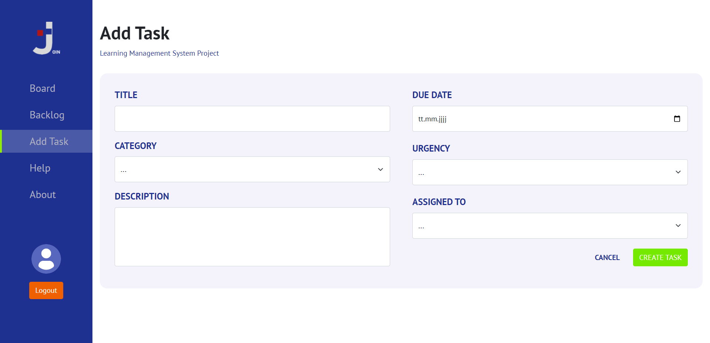
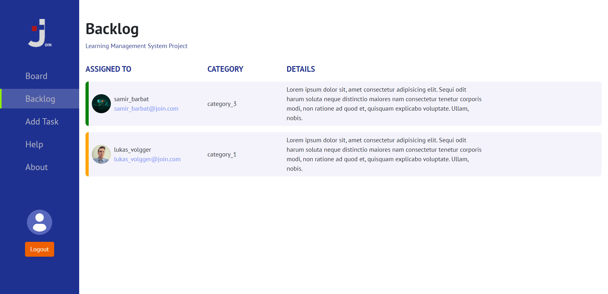
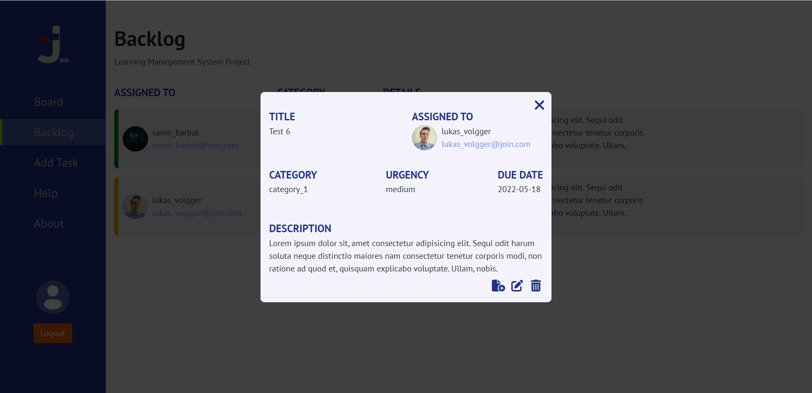
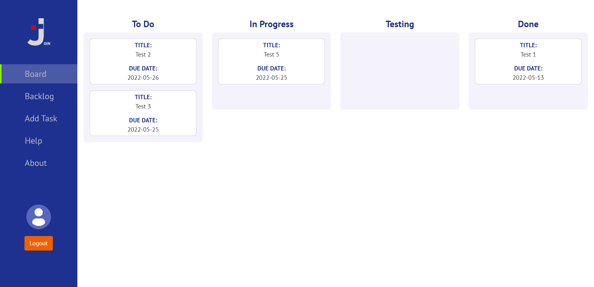
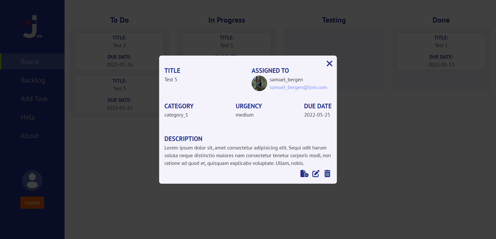

HELP
How to use the Join app- Create a task on the "Add Task" page 
- You can find and edit the created tasks on the "Baklog" page 
- Click on a task to edit it. Here it can be sent to the "Board" page, edited or deleted 
- The tasks sent to the "Board" page are displayed first in the "Todo" column and can be moved with drag & drop depending on the processing status. 
- Click on a task to edit it. Here it can be removed from the "Board" and sent to the "Backlog" page, edited or deleted 